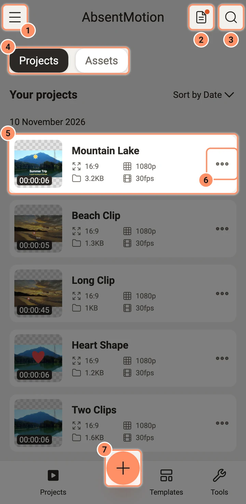
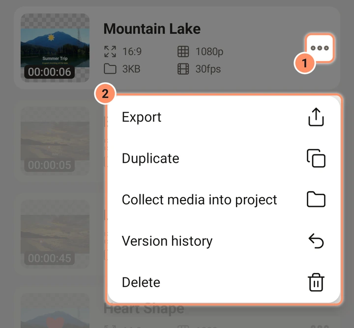
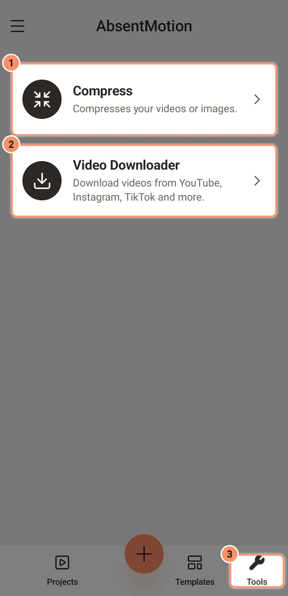
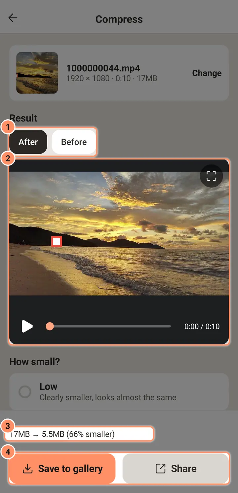
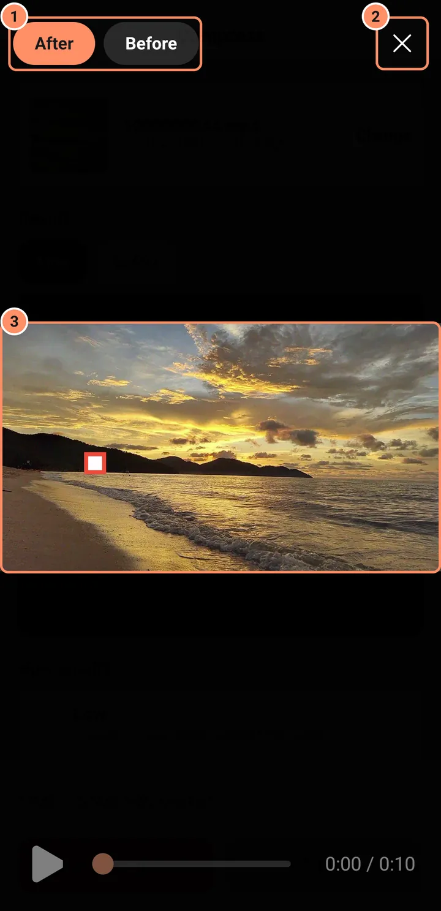
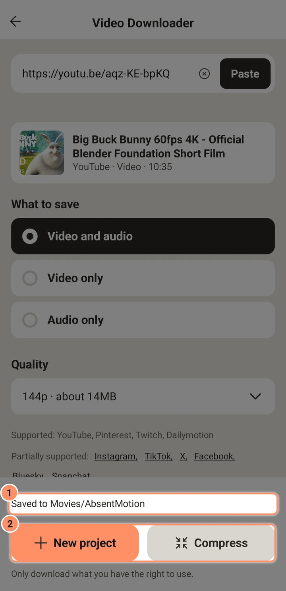

ホーム画面
プロジェクト、アセット、テンプレート、ツールタブのツール（圧縮、トリム、音声を抽出、GIFを作成、動画ダウンローダー）、その周りにあるボタンについて説明します。
ホーム画面は、初回起動後に最初に表示される画面です。プロジェクトの一覧が表示され、プロジェクトの作成、検索、設定の変更を行うボタンがあります。画面が十分に広いタブレットでは、トップバーが幅広のヘッダーになり、プロジェクトとテンプレートはグリッドで表示されます。縦向きでも横向きでも同じです。

上部バー
- メニューボタン（左上の三本線）。設定ドロワーを開きます。
- 中央にAbsentMotion。
- 検索（右側の虫めがね）。検索欄を開きます。検索中は同じ場所に閉じるためのXが表示され、戻るボタンでも閉じられます。
下部バー
- プロジェクト、テンプレート、ツールで、ホーム画面の3つのページを切り替えます。
- その間にある丸い+ボタンで新しいプロジェクトを作成します。プロジェクトの作成を参照してください。
プロジェクトとアセット
プロジェクトページの上部には、プロジェクトとアセットの2つのチップがあります。
- プロジェクトは動画やアニメーションです。カードをタップするとエディターで開きます。
- アセットは、プロジェクトから保存したもの、または新規プロジェクトシートのアセットオプションで作成した再利用可能なパーツです。エディターから他のプロジェクトに追加できます。アセット、テンプレート、プリセットを参照してください。
プロジェクトとアセットは同じ方法で保存され、一覧で別々に表示されるだけです。
カードに表示される内容
各カードには、隅にプロジェクトの長さが表示されたサムネイル、名前、2行の情報があります。1行目はアスペクト比（16:9など）と解像度（1080pなど）、2行目はファイルサイズとフレームレートです。ファイルサイズはプロジェクトファイル自体のサイズです。プロジェクトで使用する写真、動画、音声は含まれないため、何時間もの動画を使うプロジェクトでも数キロバイトと表示されることがあります。
サムネイルは、エディターを閉じたときに再生ヘッドがあった位置の静止画です。エディターで一度も開いたことのないプロジェクトでは、空のサムネイルが表示されることがあります。
カードのメニュー
カードの三点ボタン（その他）には次の項目があります。
- 書き出しを選ぶと、一覧から直接書き出し画面が開きます。「現在のフレーム」オプションは最初のフレームを使用します。XML書き出しを選べるのはここだけです。書き出しを参照してください。
- 複製（アセットの場合はアセットを複製）は、メディアも含めて元の名前に「Copy」を付けた名前のコピーを作成します。
- メディアをプロジェクトにまとめるは、プロジェクトが使用するすべてのファイルをプロジェクト外からプロジェクト内にコピーし、ギャラリーに依存しないようにします。プロジェクト、バックアップ、読み込みを参照してください。
- バージョン履歴はプロジェクトの以前のバージョンを表示し、そのうちの1つに戻せるようにします。
- 削除（アセットの場合はアセットを削除）は確認を求めてから、プロジェクト、そのバージョン、ほかで使われていないメディアのコピーを削除します。ゴミ箱はありません。削除したプロジェクトは元に戻せないので、不安な場合は先にバックアップしてください。

ファイルが破損したプロジェクトでは、情報の代わりに破損 — バージョンを復元と表示されます。タップすると以前のバージョンを復元できます。削除することもできます。
検索
検索ボックスはホーム画面全体で1つです。プロジェクトページではプロジェクトとアセットの名前（「プロジェクトとアセットを検索」）を、テンプレートページではテンプレートとプリセットを検索します。大文字小文字やアクセント記号は区別せず、入力した単語はすべて、順序を問わず名前に含まれている必要があります。
並べ替え
プロジェクトとアセットの一覧では、ヘッダーに日付で並べ替えまたは名前で並べ替えと表示されます。タップすると切り替わります。日付では新しい順に、日付見出しでグループ化されて表示されます。名前ではAからZの順に並びます。アプリは選択を記憶します。
テンプレート
テンプレートページには、マイテンプレートとマイプリセットの2つのチップがあります。詳しくはアセット、テンプレート、プリセットで説明しています。
ツール
ツールページには、プロジェクトとは関係なくファイルを扱う5枚のカードがあります。圧縮、トリム、音声を抽出、GIFを作成、動画ダウンローダーです。カードをタップすると開きます。タブレットではカードが横に並び、ツールは全画面で開きます。横向きにすると、設定がファイルの隣の2列目に並びます。

圧縮
圧縮は、動画や画像の小さいコピーを作ります。たとえばチャットで送りたいときに便利です。元のファイルは変更されません。
- 動画または画像を選択をタップして、フォトピッカーでファイルを選びます。変更で別のファイルを選べます。
- どれくらい小さくしますか？の下から、低（見た目はほぼそのままに、しっかり小さく）、中（初期値。チャットやSNSアプリに適したサイズ）、高（見た目を保ちながら最大限小さく）、Discord、カスタムを選びます。DiscordはDiscordのアップロード上限内に収め、どれにするかを尋ねます。無料（20 MB）、Nitro Basic（50 MB）、Nitro（1 GB）です。
- ボタンの上の行に、予想されるサイズが表示されます。たとえば「約12 MB（現在80 MB）」です。ファイルがすでに小さい場合や、サイズ上限に収まらないほど長い場合も、ここに表示されます。
- 圧縮をタップします。バーに進行状況が表示され、キャンセルで中止できます。処理中は画面が点灯したままになります。

カスタムでは、すべてを自分で選べます。
| 設定 | 選択肢 |
|---|---|
| サイズ | 動画：元のサイズ、1080p、720p、480p。画像：元のサイズ、2048、1280、800 px |
| 品質 | 最高、高、小、最小。または目標サイズを指定して、サイズをMBで入力 |
| フレームレート | 動画のみ：元のサイズ、60、30、24 |
| 音声 | 動画のみ：オフ、小、高、最高 |
| 形式 | 画像のみ：JPEGまたはWebP |
完了すると、ボタンの上の行に元のサイズと新しいサイズ、どれだけ小さくなったかが表示されます。たとえば「17MB → 5.5MB（66%縮小）」です。小さくならなかった場合はそう表示され、元のファイルをそのまま使うよう案内されます。結果の下にあるチップ圧縮後と圧縮前で、プレビューを新しいファイルと元のファイルの間で切り替えられます。プレビュー右上のボタンで全画面表示が開き、同じ2つのチップが使えます。ギャラリーに保存をタップすると新しいファイルが保存されます（動画はMovies/AbsentMotion、画像はPictures/AbsentMotion）。共有をタップすると、ほかのアプリに送れます。


トリム
トリムは、選んだ部分だけを残して、新しいMP4動画として保存します。元の動画は変更されません。
- 動画を選択をタップします。
- 残す部分の下で、画像の帯の両端をドラッグします。上の大きな画像には、動かしている端のフレームが表示されます。開始と終了の矢印で、その端を少し前や後ろに動かせます。長さには、その部分の長さが表示されます。
- 方法の下で、高速（初期値。再エンコードしないので速く、画質もそのままです。開始位置は動画の最も近いカット位置に合わせられます）か正確（選んだ位置ぴったりでカットしますが、時間がかかります）を選びます。高速では、開始の矢印はカット位置から次のカット位置へジャンプします。
- ボタンの上の行に、予想されるサイズが表示されます。トリムをタップします。
動画にカット位置がほとんどない場合、高速では先頭からしか開始できず、画面にもそう表示されます。好きな位置から開始するには、正確を選んでください。
音声を抽出
音声を抽出は、動画の音声を音声ファイルとして保存します。
- 動画を選択をタップします。音声のない動画では「この動画には音声がありません。」と表示されます。
- 形式：M4A（初期値）またはMP3。
- 品質：小、高、最高。M4Aでは元のサイズもあり、動画の音声が対応していれば、音声を劣化なしでそのままコピーします。その場合はアプリが自動で選びます。
- ボタンの上の行に、予想されるサイズと長さが表示されます。抽出をタップします。
プロジェクト内の動画から音声を取り出すには、代わりにレイヤーメニューの音声を抽出を使います。音声をご覧ください。
GIFを作成
GIFを作成は、動画の一部をアニメーションGIFに変換します。
- 動画を選択をタップします。
- 残す部分の下で、トリムと同じように部分を選びます。GIFの長さは最大30秒です。
- サイズはGIFの長辺で、320、480（初期値）、720 pxから選べます。フレームレートは10、15（初期値）、24です。ループは無限（初期値）または1回です。
- ボタンの上の行に、予想されるサイズとフレーム数が表示されます。これは数枚のサンプルフレームから測定した値です。GIFが25 MBを超えそうな場合は「このGIFは大きくなります。サイズを小さくするか、短い部分にしてください。」と表示されます。GIFを作成をタップします。
トリム、音声を抽出、GIFを作成の結果
バーに進行状況が表示され、キャンセルで中止できます。完了すると、ボタンの上の行に新しいファイルのサイズが表示され、結果に内容が表示されます（音声は名前が表示されます）。保存をタップして残すか、共有をタップしてほかのアプリに送ります。動画はMovies/AbsentMotion、GIFはPictures/AbsentMotion、音声はMusic/AbsentMotionに保存されます。問題が起きたときは、その内容が行に表示されます。たとえば「この端末には大きすぎます。サイズを小さくするか、短い部分にしてください。」です。
動画ダウンローダー
動画ダウンローダーは、リンクから動画をスマートフォンに保存します。無料のアドオンが必要です。1回だけのダウンロードで、画面にサイズが表示されます（約25 MB）。アドオンにはオープンソースのツールPythonとyt-dlpが入っていて、設定の動画ダウンローダーアドオンを削除でいつでも削除できます。64ビットプロセッサのスマートフォンで使えます。

- 初回は、「ダウンロードにはアドオンが必要です」と書かれたカードでアドオンを取得をタップします。
- ほかのアプリで動画のリンクをコピーし、貼り付けをタップします（またはフィールドにリンクを入力します。Xで消去できます）。アプリがリンクを確認し、タイトル、小さな画像、種類を表示します。たとえば「YouTube · 動画 · 10:35」です。
- 保存する内容の下で、動画と音声、動画のみ、音声のみから選びます。
- 画質の下で、その動画にある画質から1つ選びます。それぞれにサイズが表示されます。たとえば「1080p60 · 約255MB」です。画像だけの投稿には選ぶものがなく、画像はそのまま保存されます。
- ダウンロードをタップします。完了すると、保存先がメッセージに表示され（たとえば「Movies/AbsentMotionに保存しました」）、2つのボタンが現れます。新規プロジェクトはその動画を入れた新しいプロジェクトを開き、圧縮は圧縮ツールでそのファイルを開きます。


ボタンの下の対応には使えるサイトが、一部対応には制限つきで使えるサイトが一覧で表示されます。名前をタップすると制限を読めます。たとえば、Instagramのストーリーズや非公開の投稿はログインが必要なため、ダウンロードできません。ダウンロードできないリンクには、理由が表示されます。非公開または削除された動画、ログインが必要な投稿、プレイリスト、ダウンロードをブロックしたサイト、接続なしなどです。
使用する権利のあるものだけをダウンロードしてください。画面のボタンの下にも同じ注意が表示されます。
動画ダウンローダーは、パソコン版にも、Chromebook用のIntel版・AMD版ファイルにもまだありません。
プロジェクトファイルの読み込み
初期状態では、ホーム画面に読み込みボタンはありません。ファイルマネージャーやメッセージなど別のアプリから、共有または「アプリで開く」を使ってプロジェクトファイルを開くと、AbsentMotionが受け取ります。ボタンを使いたい場合は、設定でプロジェクト一覧に読み込みカードを表示をオンにします。すると、ファイルを選択ボタンの付いたカードがプロジェクト一覧の上部に表示されます。プロジェクト、バックアップ、読み込みを参照してください。
問題が起きたとき
- アプリが予期せず終了した場合、次回起動時にAbsentMotionが予期せず終了しましたと理由が表示され、未保存の編集がある場合は復元するかどうか尋ねられます。
- クラッシュログは設定のクラッシュログにあります。
- 古いバージョンを使っていると、新しいバージョンがあることをアプリが知らせます。詳しくは設定を参照してください。